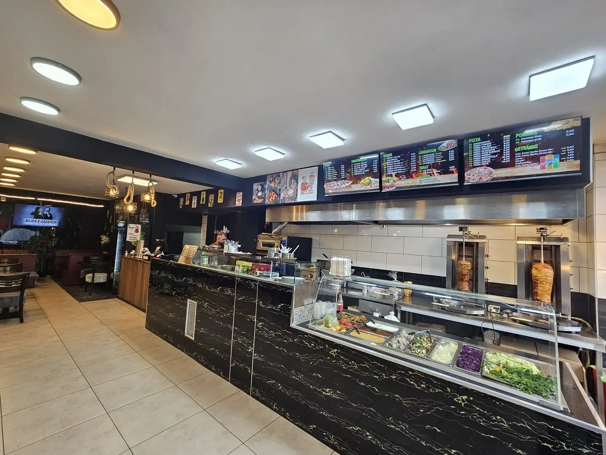
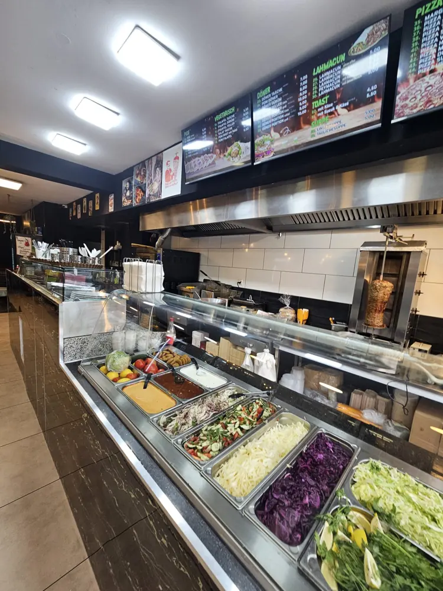
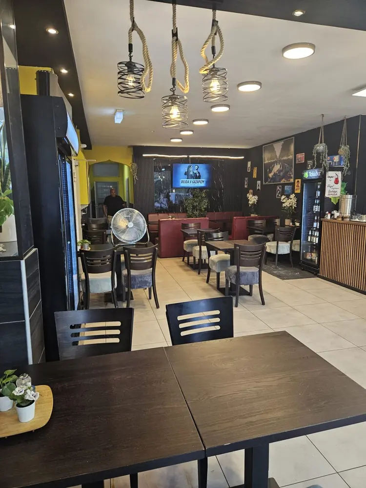
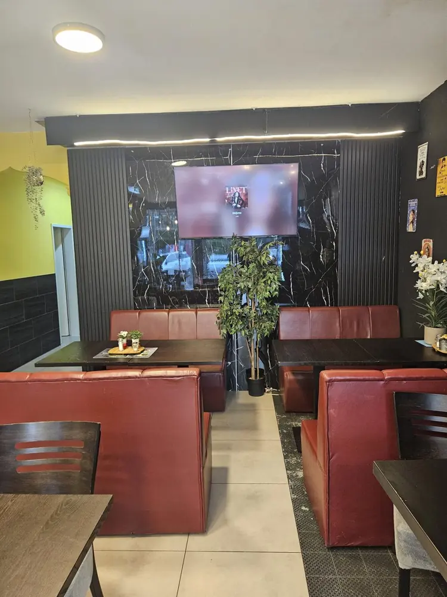
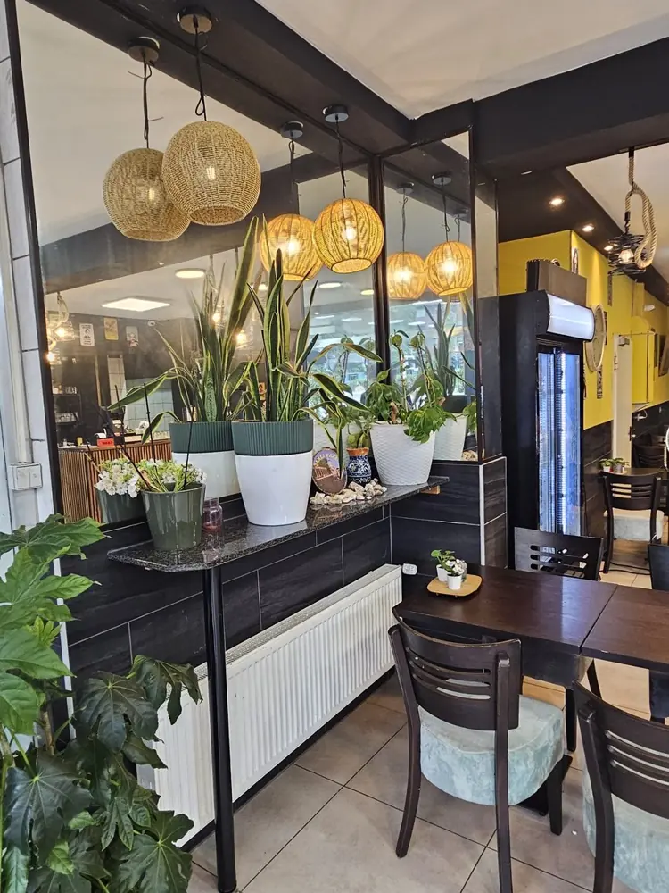
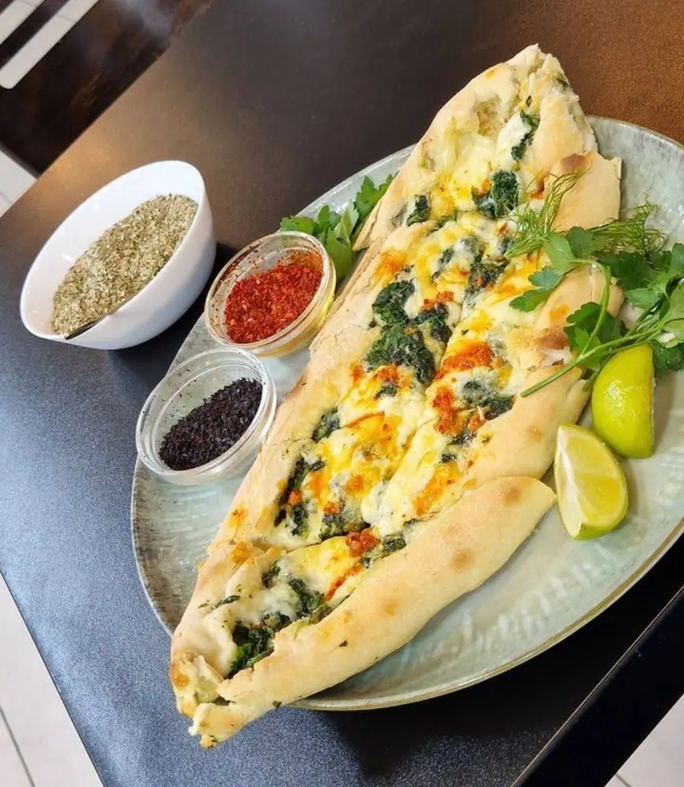
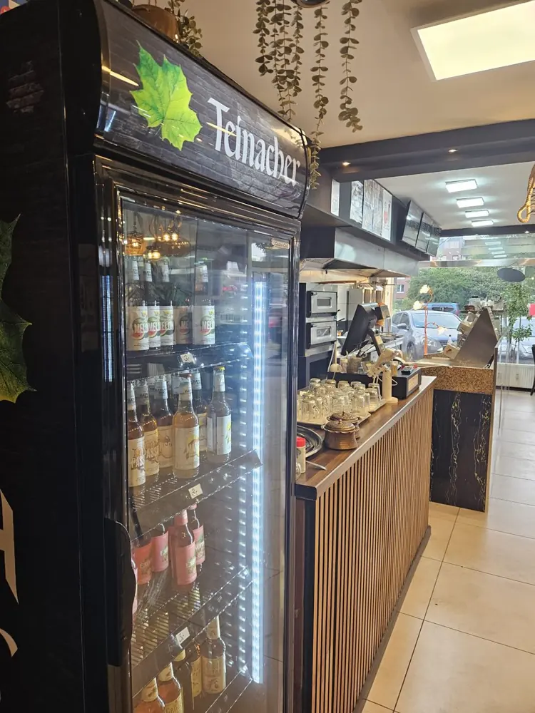

Authentic Urfa style · fresh from the oven
Essah Urfa Lahmacun: Traditional handmade lahmacun in Düsseldorf
Thin dough, savoury topping, straight from Düsseldorf-Wersten. On Kölner Landstraße for years.
Lahmacun from Düsseldorf-Wersten – handmade, the way it should be
Right in Düsseldorf-Wersten, on Kölner Landstraße, we bake fresh lahmacun every day at Essah Urfa, following a traditional family recipe. The dough is made fresh daily and rolled out wafer-thin by hand, and the spicy topping is seasoned with fresh herbs – not fast food off the shelf, but craftsmanship you can taste.
If you’re looking for real lahmacun in the south of Düsseldorf, you’ll find more than just the Turkish oven classic here: our menu ranges from classic döner and pide to lahmacun-style pizza – there’s something for everyone. Take away or sit down with us: we make sure everything is freshly prepared, not pre-made and reheated.
As a small, family-run takeaway in Wersten, we’re just as happy to welcome regulars from the neighbourhood as everyone who comes from other parts of Düsseldorf for a good lahmacun. You don’t have to eat standing up: we have comfortable seating where you can enjoy your food in peace – with a fresh ayran or a cold drink. Whether you drop in on your way home through Wersten or plan a visit from the south of Düsseldorf: come by, give us a call or just walk in.

Why Essah Urfa?
Fresh every day
Dough and topping are prepared fresh every day – nothing sits in the cold store for days.
Family recipe
The spice blend for our topping has been passed down for generations.
Wide selection
Besides lahmacun we have döner, pide, pizza, toasties, soups and drinks – something for every taste.
Fair prices
Honest food at the right price – whether you take it away or eat in.
From dough to table
Rolling the dough
The lahmacun dough is made fresh every day and rolled out wafer-thin by hand.
Seasoning the topping
The minced-meat topping is seasoned with fresh herbs and spices according to our family recipe.
Baking in the oven
Each lahmacun goes into the oven on its own until the edge is crisp and the topping juicy.
Inside the shop






What guests say
The 5-star reviews are absolutely deserved! The dürüm döner and the “regular” döner tasted great – lots of fresh meat, fresh vegetables and a really tasty sauce. The owner was very friendly and even offered us a Turkish tea on the house. You can sit inside nice and cosy. For me the tastiest döner in a long time – chicken and veal alike. The prices are good too.
Everything is freshly made and tastes delicious. The pizzas aren’t Italian-style though, they’re lahmacun-style. Very attentive and friendly service – I’ll gladly come back!
OMG, it doesn’t get better than this – it’s like a dream, the best döner in the whole world! I’ve been there twice already. On Thursdays it costs €4.99 instead of €5.99, and the ayran is definitely worth the one euro extra. I went with my mum and brother, then again for my little niece – and in the end my sister and cousin absolutely wanted one too.
Very good döner – veal or chicken, great value for money, nice owner. Highly recommended here in Wersten.
I went there for the first time in August 2025 and got a chicken döner and a veal döner. Both tasted very good. The bread could be toasted a little longer, but otherwise a tasty döner.
Good to know
Can I eat in?
Yes, we have comfortable seating – including window seats looking out onto the street.
Do you have vegetarian dishes?
Of course. For example falafel in pita bread, falafel dürüm, a falafel plate or vegetarian lahmacun.
Do you only serve lahmacun?
No. Besides lahmacun you’ll find döner, pide, pizza, toasties, soups, fries and drinks. What makes lahmacun different from döner and pide is explained in our lahmacun guide.
What’s the quickest way to reach you?
Just call us on 0211 97170255 or drop by at Kölner Landstraße 263 in Düsseldorf.
Visit us
- Address
- Kölner Landstraße 263
40591 Düsseldorf - Phone
- 0211 97170255
- Opening hours
-
Mon – Thu: 11:00 – 01:00
Fri – Sun: 11:00 – 02:00 - @essah_urfa
Loading the map connects to Google’s servers and sends your IP address to Google. More in our privacy policy (in German).